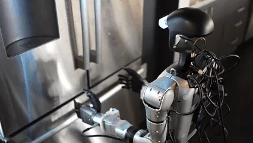
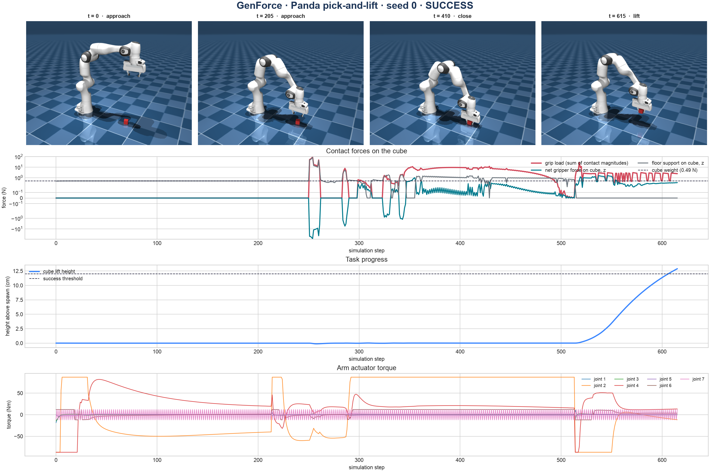
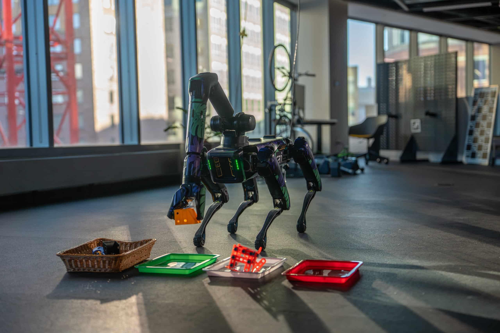

EgoX: Egocentric Cross-Embodiment Manipulation with Embodiment Dreaming ↗
EgoX learns shared manipulation skills from egocentric human and robot demonstrations, then adapts them to different robot bodies.

Hi, I'm Kalie. I am extremely passionate about my work in tactile-aware manipulation policies for dexterous hands and loco-manipulation policies for humanoids at the Bosch Center for AI and Carnegie Mellon University.
Previously, I was a research engineer working on training reinforcement learning policies and visuomotor manipulation policies at the Robotics and AI Institute (formerly Boston Dynamics AI Institute) to teach robots how to perform new skills efficiently and safely. I have also worked on autonomous cars, robots on the International Space Station, and large-scale databases.
Other interests: fashion, character design, nutrition
kaliefaith (at) gmail.com
EgoX learns shared manipulation skills from egocentric human and robot demonstrations, then adapts them to different robot bodies.

I'm building a MuJoCo toolkit for generating force-aware manipulation data and evaluating robot policies in simulation.

Research at the Robotics and AI Institute on detecting novel objects from human demonstrations, using demonstration videos to create labeled training data for task-specific object detectors.
